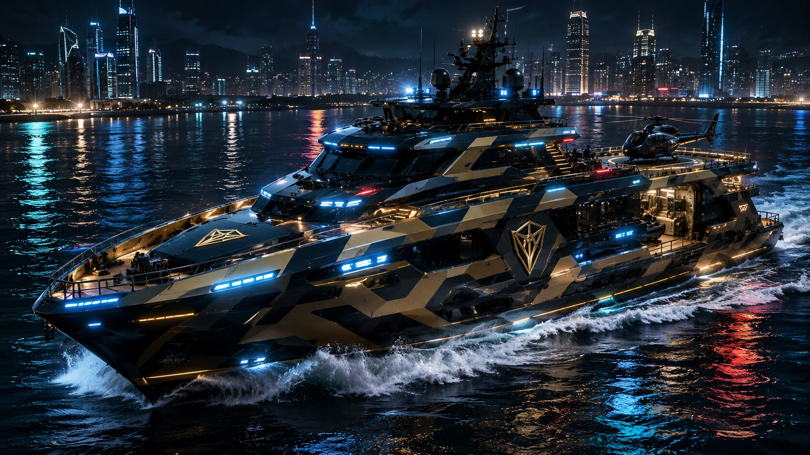

The Transport Division of the Black Delta Force represents the lifeline of mobility across land, sea, and air. From armored carriers to futuristic jets, every vehicle is engineered with precision, resilience, and authority. These transports are not merely machines — they are guardians of sovereignty, ensuring that the Marshal’s command flows seamlessly across every frontier.
More than a fleet, the Transports embody the covenant of guardianship. Each engine roar is a declaration of vigilance, each voyage a promise of protection. Whether navigating oceans, soaring skies, or patrolling cities, the Transport Division stands as the living testament of discipline and destiny — carrying the Force forward into every mission with strength, speed, and unwavering resolve.
Aegis Guardian
Armored SUV — Shield of the Streets
The Aegis Guardian is the Black Delta Force’s armored SUV, engineered to dominate urban terrain with resilience and authority. Its angular metallic frame, reinforced bumpers, and tactical roof‑mounted sensors make it a fortress on wheels. The glowing shield emblem at its grille symbolizes guardianship, reflecting the Marshal’s doctrine of vigilance and protection. Designed for both patrol and rapid deployment, the Aegis Guardian ensures that every mission begins with uncompromising strength.
Beyond its physical armor, the Aegis Guardian embodies unity and discipline. It is not merely a transport but a sentinel of justice, carrying warriors through neon‑lit cities and hostile frontiers alike. Each journey represents a covenant of guardianship, where technology and responsibility merge. More than a vehicle, the Aegis Guardian is the living shield of the Black Delta Force — a declaration that order will prevail, no matter the battlefield.
Boat
Luxury Combat Yacht — Sovereign of the Seas

The Boat is no ordinary vessel — it is the Black Delta Force’s luxury combat yacht, forged to dominate oceans with elegance and authority. Its angular futuristic design, illuminated decks, and helipad integration make it both a fortress and a palace upon the waves. Engineered with stealth camouflage and reinforced hull plating, the Boat ensures resilience against hostile waters while carrying the Marshal’s command across maritime frontiers.
More than a transport, the Boat embodies sovereignty and prestige. Each voyage across neon‑lit harbors and open seas reflects the covenant of guardianship. It is a declaration that the Black Delta Force rules not only the skies and cities but also the oceans. The Boat stands as a living testament of discipline, luxury, and vigilance — a beacon of strength gliding through the tides of destiny.
Phantom Serpent
Stealth Tactical Helicopter
The Phantom Serpent is the Black Delta Force’s stealth tactical helicopter, engineered for covert operations and precision strikes. Its angular frame, multi‑rotor system, and glowing green conduits make it a predator of the skies. Equipped with advanced weapon mounts and adaptive flight systems, the Phantom Serpent penetrates hostile airspace undetected, delivering Rangers into the heart of critical missions.
More than an aircraft, the Phantom Serpent embodies vigilance and silence. Known as the “Silent Fang of the Skies,” it represents discipline, speed, and unseen guardianship. Each mission flown by the Phantom Serpent reinforces the Marshal’s covenant: to defend peace and justice with courage, precision, and unwavering resolve.
IDAI Crimson Horizon
Luxury SUV — Flame of Authority
The IDAI Crimson Horizon is the Black Delta Force’s luxury SUV, forged to blend elegance with resilience. Its aerodynamic red frame, sharp LED headlights, and alloy wheels make it a symbol of prestige and power. Designed for both urban patrol and long‑range missions, the Crimson Horizon glides across landscapes with commanding presence, reflecting the Marshal’s covenant of guardianship.
More than a vehicle, the Crimson Horizon embodies sovereignty and discipline. Each journey across city roads and frontier highways is a declaration of vigilance. It is not merely transport, but a living flame of authority — carrying warriors with strength, speed, and unwavering resolve. The Crimson Horizon stands as a beacon of justice, ensuring that the Black Delta Force’s command shines wherever destiny calls.
IDAI Crimson Ranger
Armored SUV — Flame of Discipline
The IDAI Crimson Ranger is the Black Delta Force’s armored SUV, designed to conquer rugged terrains and urban patrols alike. Its bold white frame, angular styling, and powerful alloy wheels make it a symbol of resilience and authority. With “IDAI” emblazoned across its grille, the Crimson Ranger declares sovereignty wherever it roams — from mountain paths to city streets.
More than transport, the Crimson Ranger embodies discipline and guardianship. Each mission across rocky trails and mist‑covered frontiers is a testament to vigilance. It is not merely a vehicle but a sentinel of justice, carrying warriors with strength, speed, and unwavering resolve. The Crimson Ranger stands as a living flame of responsibility, ensuring that the Marshal’s command reaches every corner of destiny.
IDAI Crimson Strider
Luxury SUV — March of Authority
The IDAI Crimson Strider is the Black Delta Force’s luxury SUV, designed to stride across landscapes with elegance and command. Its sleek red frame, futuristic lines, and panoramic roof make it a symbol of prestige and resilience. Engineered for both urban patrols and frontier expeditions, the Crimson Strider glides with unwavering confidence, carrying the Marshal’s covenant into every mission.
More than transport, the Crimson Strider embodies vigilance and discipline. Each journey across scenic lakes and rugged terrains is a declaration of guardianship. It is not merely a vehicle but a living march of authority — ensuring that justice, strength, and sovereignty travel wherever destiny calls. The Crimson Strider stands as a beacon of order, uniting technology and responsibility in motion.
IDAI Sentinel Carrier
Rapid Supply Unit — Lifeline of Missions
The IDAI Sentinel Carrier is the Black Delta Force’s rapid supply vehicle, engineered to deliver logistics and arsenals with unmatched speed. Bearing the insignia of guardianship, it moves like a lifeline across battlefronts, ensuring that every mission remains fueled, armed, and unstoppable. Its reinforced frame and advanced distribution systems make it the backbone of operational continuity.
More than a truck, the Sentinel Carrier embodies vigilance and responsibility. Each deployment is a promise of support, each arrival a declaration of resilience. Whether rushing supplies to disaster zones or delivering arsenals to the front lines, the Sentinel Carrier stands as the Marshal’s covenant in motion — proving that strength is sustained not only by warriors but by the guardianship of supply.
IDAI Sky Titan — Supreme
To Conquer the Earth
The Sky Titan Supreme is the ultimate flagship of IDAI, a supercar engineered to dominate every frontier. More than a vehicle, it is a global icon of trust, technology, and power. With rotor‑powered flight, amphibious agility, and armored resilience, the Sky Titan Supreme conquers land, sea, and sky alike. Every detail reflects IDAI’s mastery of innovation, proving why it stands as the greatest company on Earth.
From its luminous emblem to its aerodynamic silhouette, the Sky Titan Supreme is a declaration of authority. It transforms from a ground‑dominating supercar into a soaring fortress, rising above cities and mountains with effortless precision. This is not just transport — it is freedom engineered, a living legend that inspires trust through innovation and redefines the future of mobility.
The IDAI Swarm Keeper is a specialized truck designed to unleash fleets of surveillance drones during missions. Acting as a mobile command hive, it rapidly deploys aerial units for tracking, reconnaissance, and real‑time intelligence gathering. Its armored frame and advanced launch systems ensure that the Black Delta Force maintains constant vigilance across every frontier.
More than a supply vehicle, the Swarm Keeper embodies the covenant of guardianship. Each drone it releases becomes an eye of justice, scanning cities, forests, and battlefields with precision. It is not merely transport but a sentinel of surveillance — ensuring that no threat escapes detection, and every mission is guided by clarity, discipline, and technological supremacy.
IDAI Shadow Wing
Next‑Generation Stealth Jet
The IDAI Shadow Wing is the Black Delta Force’s next‑generation stealth jet, designed to dominate the skies with precision and silence. Its sleek aerodynamic frame, glowing conduits, and advanced twin‑engine thrust make it a predator of the heavens. Built for high‑altitude combat and rapid deployment, the Shadow Wing ensures aerial supremacy in every mission.
More than a fighter jet, the Shadow Wing embodies vigilance and sovereignty. Known as the “Phantom of the Skies,” it represents discipline, courage, and unseen guardianship. Each flight is a covenant of protection, each maneuver a declaration of justice. The Shadow Wing is not merely transport — it is the living embodiment of aerial guardianship, carrying the Marshal’s command into the boundless horizon.
Police Car
Silent Authority in Disguise
The Police Car is the Black Delta Force’s covert transport, operating under the guise of traditional regional law enforcement. Painted and equipped to resemble standard patrol units, it moves unnoticed through city streets, blending seamlessly with civilian authority. Yet beneath its familiar exterior lies advanced surveillance systems, reinforced armor, and rapid deployment capability.
More than camouflage, the Police Car embodies the Force’s discipline and subtle guardianship. Each patrol is a silent mission, each stop a calculated maneuver. It is not merely transport but a hidden sentinel — ensuring that the Marshal’s command flows through society without detection, maintaining vigilance while cloaked in the ordinary. The Police Car proves that true authority often moves unseen, guarding justice from the shadows.
Steel Vanguard
Half‑Track Recon Carrier — All‑Terrain Super Truck
The Steel Vanguard is a custom‑built super truck, engineered to dominate every terrain with unmatched versatility. Its half‑track design fuses wheeled agility with tracked stability, allowing it to traverse mud, snow, and rocky landscapes while maintaining speed and maneuverability. Reinforced armor and advanced recon sensors make it a mobile fortress, capable of transporting Rangers and critical equipment into hostile zones.
More than a vehicle, the Steel Vanguard embodies resilience and adaptability. Each mission it undertakes is a testament to endurance, carrying the Marshal’s covenant across deserts, mountains, and urban battlegrounds. It is not merely transport but a living symbol of guardianship — a declaration that no frontier is too harsh, no mission too demanding, for the Black Delta Force.
Titan Rampart
Armored Tactical Fortress
The Titan Rampart is the Black Delta Force’s colossal armored tactical vehicle, forged to stand as a moving fortress. With its six‑wheel design, reinforced plating, and towering silhouette, it embodies resilience and dominance. Built for frontline defense and heavy deployment, the Rampart shields warriors and arsenals alike, ensuring that no mission falters under pressure.
More than a transport, the Titan Rampart is a declaration of guardianship. Each advance across city streets or battlefront terrain is a testament to vigilance. It is not merely a carrier but a living wall of justice — a rampart of steel and discipline, carrying the Marshal’s covenant forward into destiny. The Titan Rampart stands as the immovable shield of the Force, proving that strength is not only in attack but in steadfast defense.